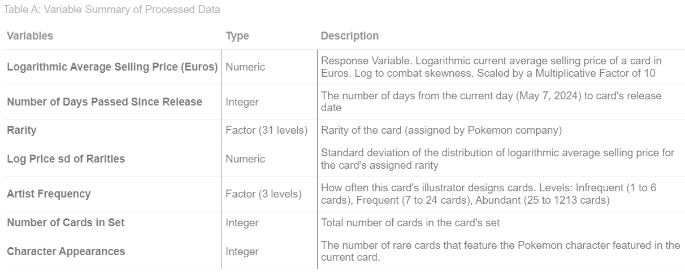

Regressing Average Selling Prices of Pokémon Cards
By Kevin Huang
Background & Motivation
What is “Pokémon”?
Pokémon is an animated series spanning games, shows, trading cards, and more. This series features animal-like creatures that possess supernatural elemental abilities. These characters, called Pokémon, usually battle each other (in a kid-friendly manner).
What is a Pokémon Card?
A Pokémon Card is a collectible card starring in the “Pokémon Trading Card Game” (also known as Pokémon TCG). This trading card game sees two players battling each other using Pokémon cards. Each card features illustrations of a character, item, or location along with the effects of the card in battle. Each card belongs to a set (of cards) representing an overarching theme for that collection of cards. There are different types of Pokémon cards (e.x. Pokémon, Trainer, Energy), each with different functions. This study will focus solely on Pokémon cards with type “Pokémon” (for simplicity, assume any mention of a Pokémon card refers to a card with type “Pokémon”).

A Pokémon card has several features, some that are relevant to this study are labelled in the annotated image above:
- Featured Character: The primary character of the Pokémon card. The name of this character stays the same over time. [Pikachu]
- Card Name: Name of the card. ALWAYS contains name of Pokémon character for a Pokémon type card. MAY contain additional word(s) separated by special characters (space, hyphen, dot) related to RARITY or other features. [Pikachu VMAX]
- Rarity: The rarity class of the card, assigned by the Pokémon Company who develops these cards. Represented as a symbol on the card [white star], but each rarity is given a specific name [Rare Holo VMAX]
- Card Illustrator: Artist who drew the card’s illustration [oky CG Works]
- Number of Cards in Set: The total number of cards in the set. Note that the total number on the card is not representative of the total number of cards in the set. This is because the Pokémon company includes “secret” cards (distinguished by rarity) in each set, increasing their desirability (further supporting rarity’s significance) [185 + unkown number of secret cards]
- Release Date: The release date of the set this card belongs to. All cards in this set release with the set on the same date. [Information not included on card itself]
The Market for Pokémon Cards
Single Pokémon cards cannot be directly bought first-hand from the Pokémon company. Instead, Pokémon cards are first introduced to consumers through packs or boxes of cards. Each card has a specific (unfortunately unknown) probability of appearing in a pack of cards (tied to rarity), introducing an element of luck to obtaining these cards. However, once these cards are opened from a pack, they can be sold second-hand by owners/sellers (who decide the price) and bought by bidders (who agree to those prices). Thus, the Pokémon company has no direct control over the prices of individual cards in this market, making it a very interesting market to explore!
Introduction to Study
Research Question
How do characteristics of a rare Pokémon card affect its current logarithmic average selling price in Euros?
A few notes on some specifics for this research question:
- By “rare” Pokémon cards, I am referring to all Pokémon cards (of type Pokémon) excluding cards with rarity “Common” or “Uncommon”. This is because these cards appear more frequently than rare cards and are not very desirable (besides a few outliers). Thus, there is not much of a market to consider for non-rare cards.
- I am working with Euros since the API for card data I am working with offers price data in both USD and Euros. However, The data in USD had inconsistent formatting leading to import errors and data errors for many observations. Working with Euros still reflects the overall market for Pokémon cards (in English), but will be more specific to Europe compared to North America.
- The current average selling price for each card is given by https://www.cardmarket.com/ (but extracted from the card API).
- The response variable is logarithmic to combat skewness (expanded on later).
Obtaining the Data
There are two APIs I used to obtain data for my study, both of which can be found at the top right of my website (or below):
- I used the Pokémon TCG API (https://docs.pokemontcg.io/) to retrieve all data regarding both cards and sets. I merged these two datasets together (by set ID) to create one dataset for all rare Pokémon type cards (\(7651\) observations).
- I used the PokéAPI (https://pokeapi.co/) to retrieve data on Pokémon character names. This is used to help with the construction of one predictor variable (discussed later), but not as a predictor itself.
Details on making the same data requests to these APIs can be found on this project’s github repository (or in the first few code blocks of the source code for the non-reproducible version that requests data from the APIs).
Note on Reproducibility
Note that the Pokémon TCG API price data updates daily. Thus, it would be impossible to replicate this study when making requests from the API on a later date. To combat this, I have exported all the raw data I have collected from the API on the date of submission (May 7, 2024) and added a reproducible version of my source code (found at the top of my website) that loads these datasets rather than requesting data from the API. Additionally, one of my predictor variables is constructed using the current date. In the reproducible version, this date is fixed to the date of submission: May 7, 2024. This allows my study to be 100% reproducible when loading the saved datasets (card_data.csv, set_data.csv, name_data.csv).
Data Wrangling & Exploration
Response Variable
As previously mentioned, I noticed the data for the average selling price of a rare Pokémon card is heavily right-skewed, with a majority of the cards having a low average selling price. To combat this, I took the log of the variable to use as my response variable. This was very effective in reducing skewness and also applies a penalty to cards with very low average selling prices (below \(1\) Euro). More details on this process including its graphical analysis can be found in my report.
Summary of Variables
Here is a table summarizing the variables in my study (response variable at the top, and the rest are predictors).

Note that a large majority of these variables are processed variables. The process of constructing these variables is described in my report, but here is a quick summary of where each variable came from:
- Rarity: Available from raw card data (no processing done)
- Number of Cards in Set: Available from raw set data (no processing done). Note that the raw data requested from the API represents the actual total number of cards in the set (including “secret” cards).
- Logarithmic Average Selling Price: Took log of current average selling price of each card
- Number of Days Passed Since Release: Calculated using card’s release date and current date (May 7, 2024)
- Log Price Standard Deviation of Rarities (Rarity PSD): Grouped cards by rarity and took standard deviations of price. An attempt to replace rarity as a predictor (to avoid making models too complex e.x. 30 dummy variables with linear regression). Due to its perfect collinearity with the rarity predictor, only one of each variable can be used in each model. Unfortunately, rarity was a significant predictor and this variable was unable to capture the same relationship with the response.
- Artist Frequency: Grouped cards by how many illustrations their artists have made (decided by quantiles).
The predictor variable “Character Appearances” has a much more complex construction process that had some consequences. This will be quickly discussed at the end of this section.
Data Errors
Due to the formatting of the data from the Pokémon TCG API, I had to use some query parameter specifications when requesting data, so I would not get data import issues. These query parameters ensured that there were no missing values in the raw data I requested from the API (which I double checked). However, I observed \(268\) observations with average selling price \(0\). Upon checking some examples of these cards with external sources (other price-tracking websites), I identified these observations as data errors from the price tracking data in the API (cardmarket). Thus, I removed these observations from the dataset, and was left with \(7383\) remaining observations. There were no other data errors for the remaining variables in the raw dataset. When creating new variables, I checked to make sure no data errors were introduced during their construction. Finally, I chose to leave outliers in the dataset since I do not want my models to ignore cards with very high selling prices as these are the most desirable.
Constructing the Character Appearances Variable
This variable counts how many rare cards each Pokémon character is featured in (and the same value is assigned to each card featuring that character). Thus, this variable tries to capture popularity of each character, which I hypothesize to be a significant predictor for the average selling price of a card. The justification behind this variable’s relation to popularity is that the Pokémon Company (who makes the cards) features popular characters in each set to make the set more popular and generate more sales. Since any Pokémon character can have multiple cards, the number of rare cards that feature a Pokémon may be a good indicator as to how popular that Pokémon character is. We see in the report as well as in the visualizations tab of my website that this variable actually has a very strong relationship with the response!
The creation of this variable is based on one key observation: every Pokémon type card’s name contains the name of the featured Pokémon character in the card. Hence, this variable is constructed by performing text mining on the Card Name variable (tokenizing each word using special characters as breaks [space, hyphen, dot, etc…]). However, as previously noted, card names can sometimes contain words that correspond to rarities. To avoid correlation between this predictor and the rarity predictor, Using the Pokémon names dataset requested from the PokéAPI filtered each token/word to only include names of Pokémon characters. This required some complex work with matching substrings (any words in card names) to strings (a single Pokémon character name) that led to a loss of a few observations.
First, there were some names in the Pokémon name dataset that did not represent the actual name of the Pokémon (e.x. “eiscue” was labelled as “eiscue-ice” [representing a form of the Pokémon]). Luckily, after observing the lost observations, the number of these occurences were few and I was able to manually add these names to the data. However, due to the tokenization process to remove words such as rarity (e.x. “Pikachu VMAX”), Pokémon characters with names that contain a special character (e.x. Mr. Mime and Ho-oh) did not have their names recognized as a single word. This lead to failure to match with a Pokémon name, excluding these Pokémon characters from the dataset. This led to a small observation loss of \(200\) observations from the original \(7383\) observations (now \(7183\)).
Data Exploration Methods
- Tables (kable) to analyze summary statistics
- ggplot2 to create heatmaps, scatterplots, barplots, and boxplots for key variables
- plotly to create interactive plots hosted on website’s visualization page
Modelling Methods
70-30 Training-Test Split with \(4978\) training data observations and \(2205\) testing data observations. This split is done before any exploratory data analysis to ensure testing data does not affect my analysis.
Linear Regression with Variable Elimination (AIC)
Regression Tree
Bagging
Random Forest
Boosting
Extreme Gradient Boosting
Linear Regression models: No interaction and Interaction terms. Also attempt to analyze significance of both rarity variables to decide which one to use in final models. Linear Regression models evaluated among each other using adjusted Pearson coefficient.
Created 5 boosting models, each with different interaction depths from 1 to 5. Chose the best performing one to compare against other models.
Extreme Gradient Boosting with grid-search 10-fold cross validation on hyperparemeters max depth and number of iterations.
Compared each model using RMSE, as Pearson coefficient is misleading for non-linear models such as XGBoosting.
More details on each method (e.x. hyperparameter values and variable selection) can be found in the report.
Results
This following is a very quick and limited summary of some interesting results found in the study. For more detailed analysis and results (e.x. model coefficients and performance evaluation), please refer to my report.
Exploratory Analysis
- Both predictor variables “Number of Days Passed Since Release” and “Character Appearances” displayed very strong positive relationships with the mean response variable, current logarithmic average selling price.
- The rarity of a card also appeared to have significant effects in the EDA
- The total number of cards and artist frequency appeared to have to a limited relationship with the response.
- The rarity PSD (along with summary statistics of the rarity variable with respect to card price) did not appear to have any significant relationship with the response.
Modelling Results
- Rarity consistently appeared as the most significant predictor throughout the ML models (seen through variable importance).
- Days since release consistently appeared to be the second most signficant predictor with ML models (followed by the character appearances variable).
- Rarity PSD was dropped from final models considering its lack of significance as a predictor and the significance of rarity as a predictor variable.
- Most models had similar test RMSE values. Some models showed signs of overfitting while others did not.
- Interesting comparison between linear regression model without interaction and linear regression model with interaction.